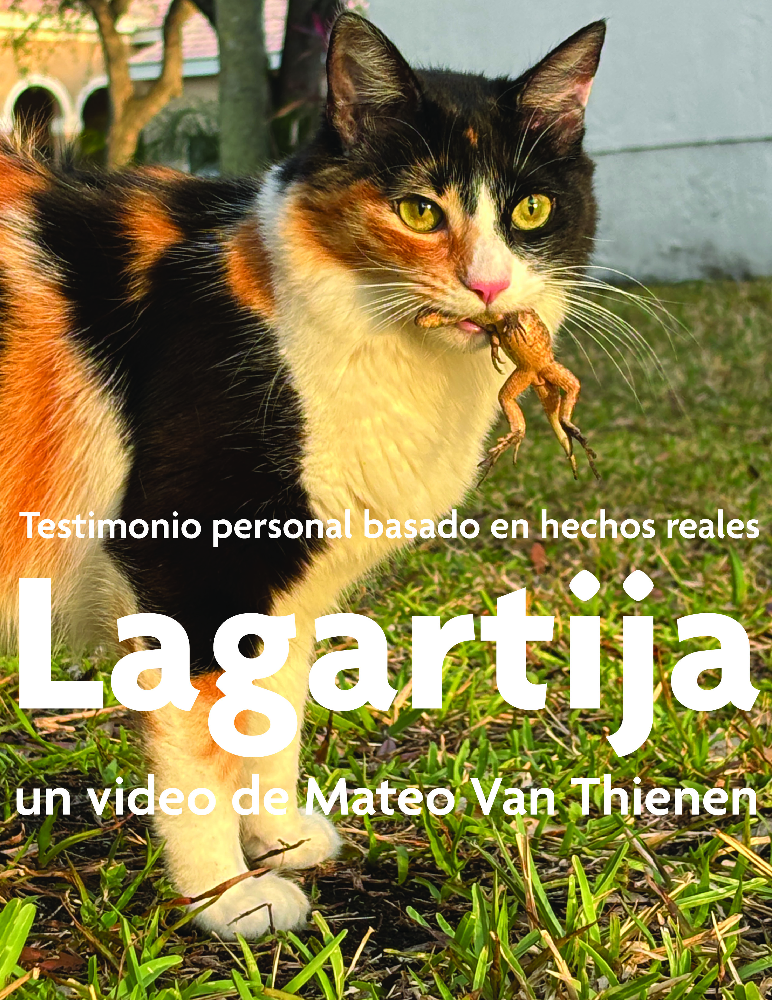

Mateo Van Thienen
"el cerebro de lagartija representa la parte más primitiva del cerebro humano, centrada en la supervivencia instintiva, mientras que el cerebro humano incluye capas más evolucionadas como el sistema límbico (emociones) y la neocorteza (razón), permitiendo decisiones más elaboradas y empatía.
la lagartija que corre hacia su agujero olvida que un león acaba de perseguirla. Nosotros, los humanos, podemos cargar con el león -o con el gato doméstico- por mucho tiempo después. nuestro cerebro grande y complejo puede reproducir en un bucle interminable los recuerdos traumáticos de pérdida o abuso, de daño o impotencia, y del dolor que los acompañan."
Locación: Weston, Florida
Duración: 10' 28"
Fecha: 20 de Abril de 2025
Ficha técnica: Formato digital, blanco y negro, voiceover sobre plano secuencia experimental

Diseñado con bootstrap por Mateo Van Thienen © 2025